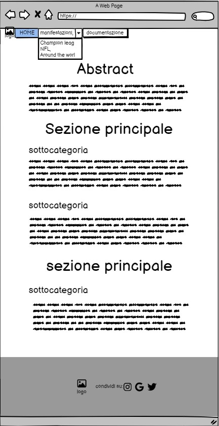

ABSTRACT
Il sito “Show Before the Show” si propone come una raccolta di quelle performance live che precedono i grandi eventi sportivi da parte delle stelle della musica internazionale, adatto quindi ad i fan degli artisti che si esibiscono o a chiunque voglia godersi un mini concerto dal vivo. Un design pulito, elegante ed una navigazione fluida lo rendono distinguibile per semplicità, minimalità e intuitività, altro punto di forza è sicuramente la completezza della raccolta. Il sito fornisce anche una breve descrizione e qualche curiosità su artista o evento.
PROJECT MANAGMENT PLAN
1. Benchmark
1.1 Obiettivi
Il sito mira a dare la giusta visibilità alle esibizioni che precedono gli eventi sportivi, le quali sono, in primis, eseguite da artisti di calibro mondiale ed inoltre spesso offrono una cornice e delle coreografie di un livello superiore rispetto a quello che potrebbe essere un concerto dello stesso artista. Show Before the Show offre la possibilità di andare a recuperare queste fantastiche esibizioni, le quali spesso vengono perse per via della maggiore importanza che giustamente viene attribuita all’evento sportivo che ne seguirà.
1.2 Target utente
Il target primario è formato da persone comprese fra i 18 e 35 anni, i quali solitamente apprezzano i generi proposti nei pre game show.
1.3 Competitors
Non esistono veri e propri competitor, quelli che potrebbero essere identificati come tali sono:
YouTube, sul quale vengono caricati tutti i pre game show, i contenuti sono però abbastanza dispersivi e non sempre è facile reperire quello che si sta cercando.
Le riviste di Gossip online, come ad esempio Vanity Fair o i magazine di musica. In questi casi però non è quasi mai possibile reperire un video della performance e solitamente gli articoli che raccontano dell’evento sono prolissi risultando così noiosi agli occhi dell lettore.
2. Struttura e layout
2.1 Architettura del sito
2.2 Wireframe



2.3 Look and feel
All’entrata del sito l’utente si troverà davanti una pagina introduttiva, nella quale viene spiegata brevemente l’idea che sta alla base del progetto. In questa pagina è presente un’immagine di sfondo al titolo e una navbar che si adatta alla grandezza dello schermo, su uno schermo più piccolo diventa un burger menù. La navbar è essenziale per spostarsi da una pagina all’altra, inoltre evidenzia sempre la pagina in cui ci si trova, anche se di per sé è abbastanza intuitivo. Dalla home è possibile spostarsi nelle pagine riguardanti i pre game show delle manifestazioni che ci interessano, ogni immagine di sfondo è evocativa per tale competizione come il tema dei colori scelto per la pagina. Infatti i colori di bottoni e footer cambiano in base a cosa stiamo guardando. In ogni pagina riguardante una manifestazione, di suguito all’header viene fornito un breve trafiletto che descive la manifestazione stessa. Dopodichè la pagina viene divisa a metà, sulla sinistra i video dei pre game show, visibili sia sul sito che da YouTube, e sulla destra qualche riga su curiosità riguardanti artista o evento, questo fa sì che all’utente, la lettura, risulti immediata e piacevole. Su schermi di minore dimensione la pagina si adatta e posiziona gli elementi sopraelencati (video e didascalia) uno sotto l’altro, questo per sfruttare la verticalità degli advice mobile e non compromettere la leggibilità e la facilità d’uso. In generale, il layout minimal, offre un’esperienza pulita ed elegante con un’interfaccia intuitiva che garantisce una gradevole esperienza su qualsiasi dispositivo per via del comportamente responsive del sito.
3. Linguaggi e strumenti
3.1 Elenca i linguaggi web utilizzati
- HTML
- CSS
- Java Script
3.2 Elenca gli stumenti tecnologici utilizzati a supporto della progettazione web
- Visual Studio Code come text editor
- Google immages per raccogliere le immagini
- Balsamiq per i wire frame
- Bootstrap per la navbar e atri aspetti grafici
- GoogleFont per la scelta dei font
- Draw.io per la realizzazione dei diagrammi
Comunication Strategy
1. Background
I Competitors indentificati non mirano allo stesso scopo del sito che ho realizzato, quindi risultano aver implementato un UI ed una UX scedenti dal mio punto di vista. Il mio sito risulta essere più lineare, intuitivo e con maggiore facilità di reperire informazioni rispetto ad una playlist su youtube e maggiormente riassuntivo e interattivo di una pagina di magazine musicale. Tutto ciò rende “Show Before the Show” più mirato, comprensibile e permette al cliente di focalizzarsi su quello che sta cercando, senza informazioni superflue o altre che proprio non c’entrano nulla.
2. Obiettivi comunicativi
Il progetto è volto a promuovere e divulgare tutte quelle esibizioni dal vivo di grandi artitsti internazionali che precedono i grandi eventi sportivi tramite uno dei più importanti ed utilizzati social network, ovvero instagram, in particolare l’obiettivo è ottenere 30 like.
3. Target audience e messaggio
Il target audience è costituito dalle persone sotto i 35 anni, ovvero quelle che maggiormente utlizzano instagram e che a cui piace maggiormente il genere di musica proposto dagli artisti protagonisti di questi spettacoli.
4. Promozione
La promozione è stata condotta tramite una pagina instagram e il passaparola fra amici e conoscenti, coinvolgendo direttamente i diretti interessati in una chat privata piuttosto che in una chat di gruppo in modo che si sentissero più coinvolti nel progetto e alimentassero a loro volta il passaparola.
5. Valutazione dei risultati
Gli obiettivi sono stati raggiunti con successo